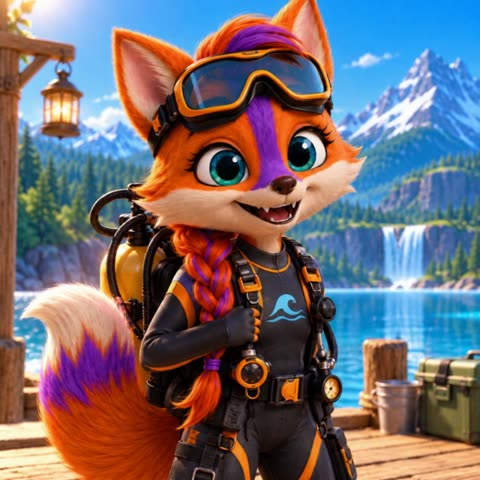
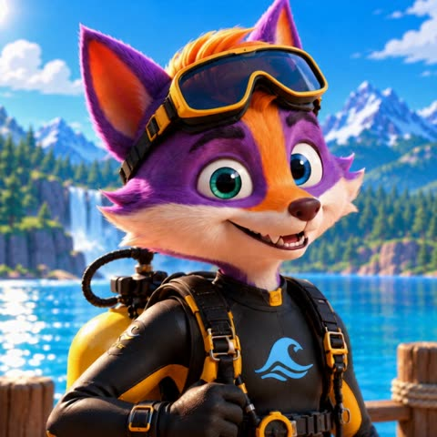
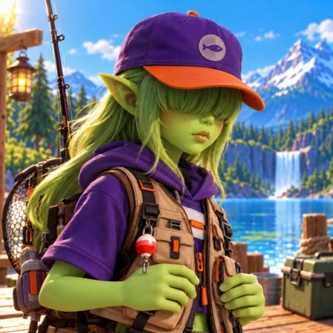
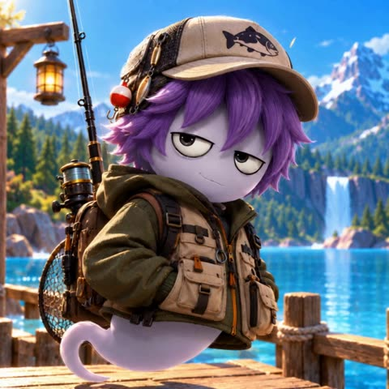
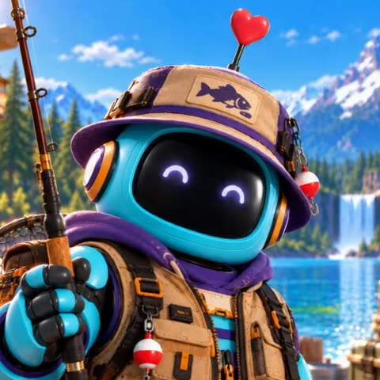
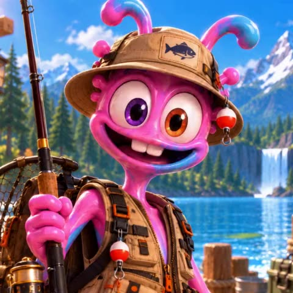

Gummy - Characters
Back to Gummy the Fisherman · All of Foxino's characters: Foxino Characters
Gummy is the fisherman: the players help him land the fish. The players themselves are the Foxino heroes. In Production the four player slots are fixed (there is no character picker any more), and 6p mode adds Rob and Gummy.
| Player | Character | Picture |
|---|---|---|
| 1 | Stella |  |
| 2 | Foxino |  |
| 3 | Pix |  |
| 4 | Ghost (Charlie in Defeat the Rob) |  |
| 5 (6p only) | Rob |  |
| 6 (6p only) | Gummy |  |
In the game, each picture is a short looping video (video/pfp-<name>.mp4).
Test and Phone still let players create and rename their own characters.